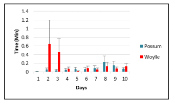

Bait/lure
(Types, Placement at all vs. a subset of cameras)#
Hint
Bait is a food item (or other substance) that is placed to attract animals via the sense of taste and olfactory cues (). Lure is any substance that draws animals closer; include scent lures, visual lure and audible lure (Schlexer, 2008).
Attractants (i.e., bait or lure can increase the detection probability by drawing animals into the camera’s detection zone, thereby effectively increasing the sampled area.
There are many options of bait and lure available, and those used in camera studies have included commercial scent lures, food baits, carcasses and compact disks (see Wearn & Glover-Kapfer, 2017 for details and examples). Scent lure is typically applied to objects in the detection zone (e.g., trees or rocks), whereas a food lure is generally hung up or placed behind wire mesh to limit tampering by animals. Food rewards (baits or carcasses) are also used but are more likely to influence behaviour and inter- and intra-specific interactions (e.g., avoidance of an area or conflict between individuals or species) and may result in food conditioning, which in turn may lead to human-wildlife conflict.
Some options are costly and require frequent reapplication during the survey deployment. Users should consider the additional cost of supplies and labour required to revisit the field to reapply at the frequency necessary to maintain effectiveness. Scent lure dispensers, such as those developed by the Woodland Park Zoo, may help reduce the number of visits needed for reapplication and associated costs.
Few studies have compared the efficacy of different types of attractants, but both Espartosa et al. (2011) and Thorn et al. (2009) suggested that food baits are more effective than scent lures for many species (although these evaluations did not include wildlife species from Canada).
Since species may respond to lure types and scents differently, the type of lure chosen (if any) should be based on the biology of the Target Species but also on the and the survey environment. For example, liquid products may be less suitable in areas where precipitation is high. Some lure types smell like the urine of a particular species, which could result in higher detections of certain species by activating an investigative response while resulting in avoidance by other species. Interestingly, a study (Holinda et al., 2020) by members of WildCAM found no evidence that scent lure placed at camera stations repelled non-target (i.e., prey) animals (see also Mills et al., 2019; rather, both predators and prey showed varied responses to the scent lure.
For many modelling approaches, placing bait or lure may violate and increase the likelihood of biased results (e.g., lure might amplify measures of occurrence, biasing estimates of space use []). Attractants may also introduce variation in the response by species, individuals or Sex Classes (or over space or time) that would not naturally occur. It may be possible to address biased samples in the analysis stage, but this can require substantial amounts of data.
In contrast, placing bait or lure can also help to better satisfy the assumptions of some modelling approaches. For example, attractants might be deployed to help satisfy the assumption of constant detection probability of occupancy models (when using a ), relative abundance and [capture-recapture (CR); ; ) models by increasing individuals’ detection probability (Wearn & Glover-Kapfer, 2017).
Bait or lure may be a “necessity” for species (or areas) where detection is unlikely without a large number of remote cameras or lengthy surveys. Most studies that use attractants target carnivore species, which are often elusive, difficult to monitor and occur at low densities.
In general, we recommend against the use of bait or lure for projects focused on unbiased detection of as many species as possible. Overall, the use of attractants is not recommended unless the study is an occupancy models or capture-recapture (CR) study of a Target Specieswith low detection probability (Wearn & Glover-Kapfer, 2017).
We advise against the use of bait in or near urban areas due to the possible increase in human-wildlife conflict. To minimize this potential, bait or lure should not be placed within 200 m of residences, industrial or recreational facilities, campgrounds, 100 m of active human-use trails (e.g., hiking trails), or 50 m of roads.
Where attractants are used, users must follow provincial policy and legislation (e.g., BC Wildlife Act – Section 33.1, Alberta Wildlife Act, and Wildlife Regulation, as well as local bylaws. Before deploying any remote cameras in the field, users must also obtain the necessary permits from provincial and/or research institutions (e.g., animal care permits). In Alberta, a wildlife research and collection permit is required when using bait or lure. Special conditions or restrictions may also apply. Refer to https://www.alberta.ca/wildlife-research-and-collection.aspx for further details. In British Columbia, a research permit is required when using bait, but not scent lure. Special conditions or restrictions may also apply in each province.
Consideration of placement locations should include proximity and potential impacts to First Nations Reserves and Metis Settlements. You can replace information on First Nations Reserves and Metis Settlements using the [Landscape Analysis Indigenous Relations Tool (LAIRT) (Government of Alberta, 2023a) located within the Landscape Analysis Tool (LAT) (Government of Alberta, 2023b) (see “Non-Administered Areas”). The results produced by LAIRT do not provide an official list of First Nations and Metis settlements to consult if consultation is required since “LAIRT will report on where government ordinarily considers requiring consultation with a particular First Nation or Metis Settlement, which is subject to be revised at any time” (Government of Alberta, 2023a).
This section will be available soon! In the meantime, check out the information in the other tabs!


Mollow (2018) - Fig. 8 Average time spent per visit per lure (non- reward) station. Sourced from Thomas & Cowan (2016)


Check back in the future!
Type |
Name |
Note |
URL |
Reference |
|---|---|---|---|---|
{ rbib_schlexer_2008 }}